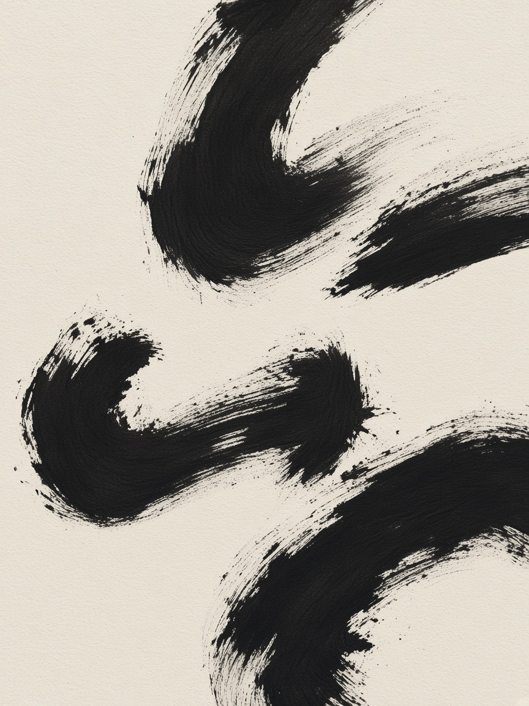
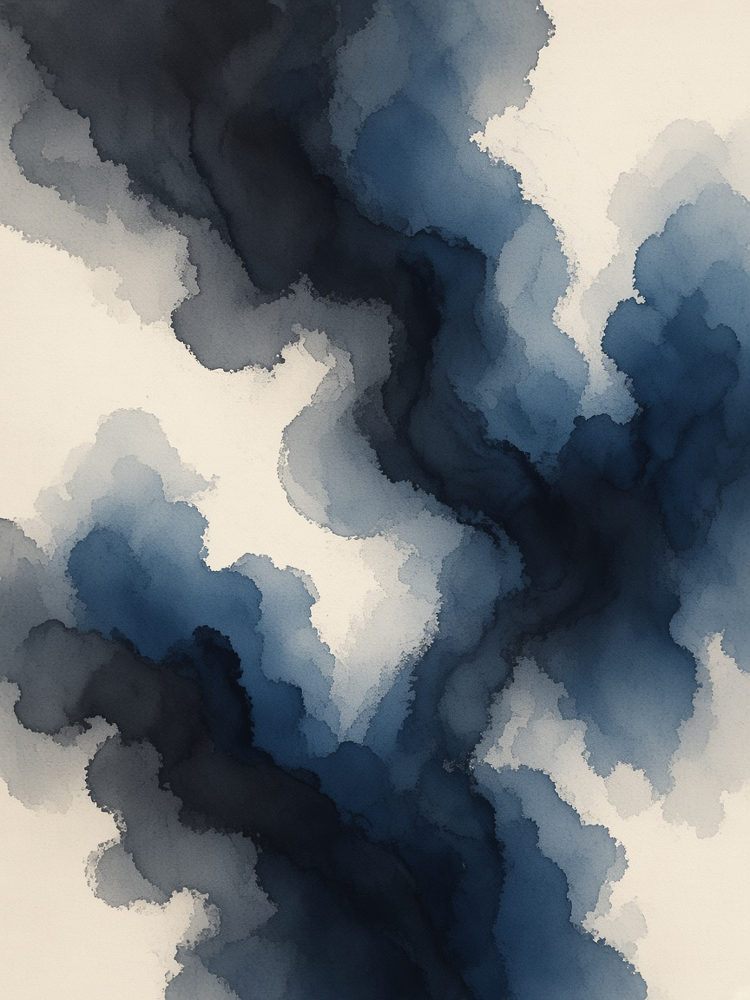
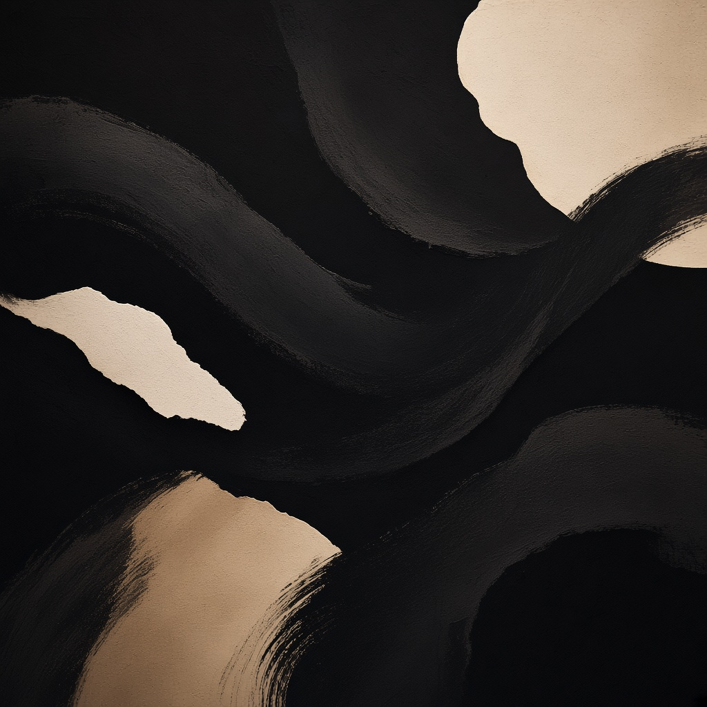
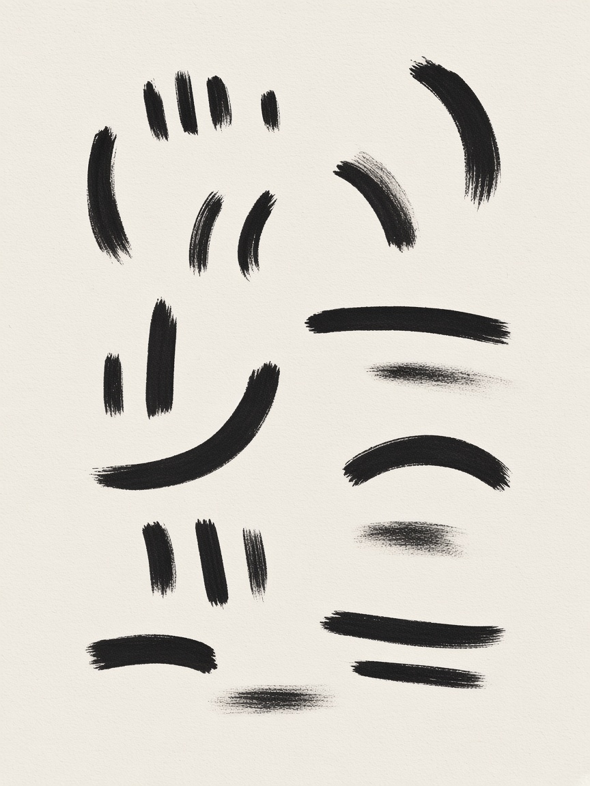
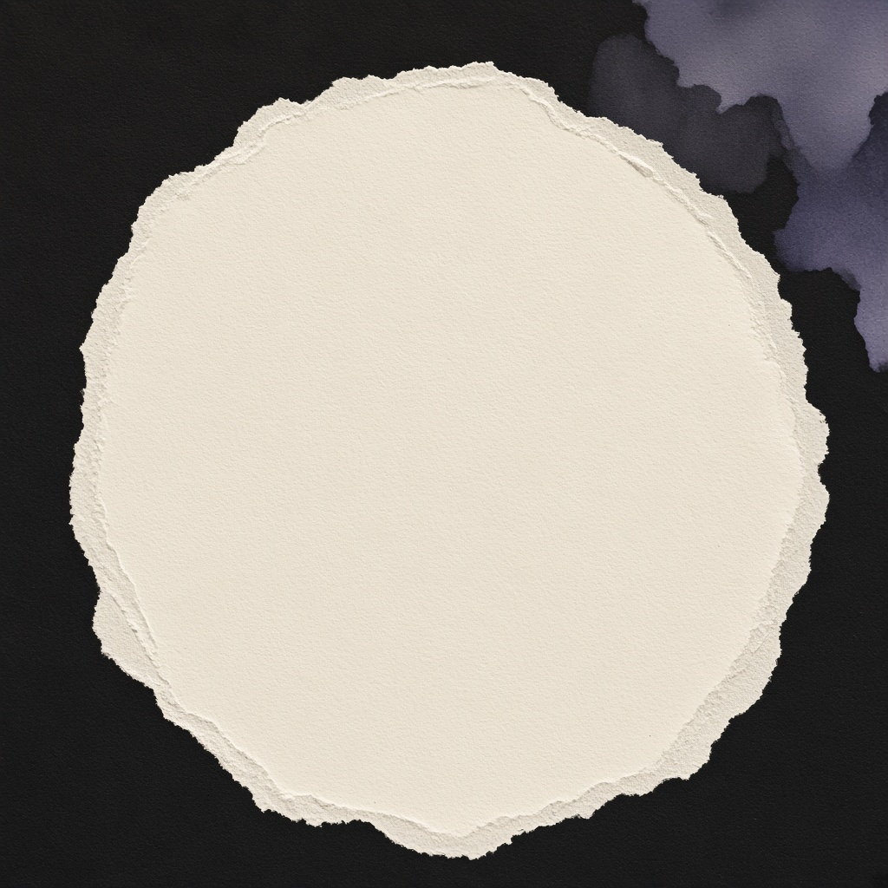

Charcoal Field
Less neon. More print-studio abstract art — ink, graphite, and paper fields that can carry posters, social posts, and campaigns while the cat stays the quiet seal.
See poster compositions
Research → pivot
Polsia energy, atelier costume
Keep the stop-scroll physics. Drop the neon signal. Kip’s marketing should feel like a small gallery of abstract prints that somehow still text you back.
v1 — neon signal
- Black void + lime volt underline
- Type does all the stopping
- Reads closer to tech campaign kits
- Easy to confuse with other AI brands chasing “electric”
v2 — charcoal field
- Abstract ink / charcoal plates as the visual volume
- Disc as studio stamp, not a sticker
- Pigment accents only inside artwork
- Extends the cat’s brush into a whole print language
Art system
Five plates. One studio.
Reusable abstract fields. Full-bleed on posters. Cropped for feed tiles. Always leave a quiet zone for type. Never draw a second cat into the art.




Poster kit
Art first. Line second. Seal last.
Each frame is a full-bleed plate, one mate-voice line, and the disc. No neon bars. No feature cards.
Send the photo.Plate as the whole surface. Type in the quiet zone.
Kip’s on it.Dark field. Cream cut. Paper type.
Text it. Posted.Sparse marks — the cat’s brush, scaled up.
Approve in the thread.Torn paper energy. Quiet pigment wash only in the art.
Social posts
Same plates, square crop
Feed tiles are not a second brand. Crop the plate, keep the seal, shorten the line.
Send it.
On it.
Posted.
Colour
Pigment, not neon
Core stays sacred. Soft graphite / wash / smoulder may appear inside plates only — never as a glowing CTA system.
CTAs stay disc-on-void or ink-on-paper. Atmosphere is rented from the plates, not from a highlighter accent.
Guardrails
Do / don’t
Do
- Lead with abstract art — plate is the surface
- Keep the disc unaltered as the studio seal
- Use 2–4 mate-voice words max
- Commission plates in one charcoal/paper family
- Leave quiet zones for type
Don’t
- Bring back neon volt bars or glow
- Copy Polsia’s Times / terminal / orange kit
- Redraw cats into the abstract field
- Trap art in rounded SaaS cards
- Wash campaigns in purple or terracotta clichés